화공기사(구)(구) (2010-05-09 기출문제)
1과목: 화공열역학
1. 단열된 상자가 2개의 같은 부피로 양분되었고, 한 쪽에는 아보가드로(Avogadro)수의 이상기체 분자가 들어 있고 다른 쪽에는 아무 분자도 들어 있지 않다고 한다. 칸막이가 터져서 기체가 양쪽에 차게 되었다면 이때 엔트로피 변화값 △S에 해당하는 것은?
- △S = RT ln 2
- △S = -R ln 2
- △S = R ln 2
- △S = -RT ln 2
(정답률: 알수없음)
2. 다음 그림은 역 카르노사이클이다. 이 사이클의 성능계수는 어떻게 표시되는가? (단, T1에서 열이 방출되고 T2에서 열이 흡수된다.)
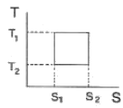
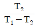
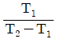
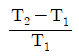
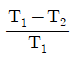
(정답률: 알수없음)
3. 다음중 역행응축(retrograde condensation)현상을 가장 유용하게 쓸 수 있는 경우는?
- 기체를 임계점에서 응축시켜 순수성분을 분리시킨다.
- 천연가스 채굴 시 동력 없이 액화천연가스를 얻는다.
- 고체 혼합물을 기체화시킨 후 다시 응축시켜 비휘발성 물질만을 얻는다.
- 냉동의 효율을 높이고 냉동제의 증발장열을 최대로 이용한다.
(정답률: 알수없음)
4. 화학반응에서 정방향으로 자발적 반응이 일어나는 경우 깁스(Gibbs)에너지 변화(△G)의 표현으로 맞는 것은?
- △G ＞0
- △G＜ 0
- △G = 0
- △G = ∞
(정답률: 알수없음)
5. Clausius-Clapeyron 상관식을 통하여 보았을 때 다음 중 증기압과 직접적으로 밀접한 관련이 있는 물성은?
- 점도
- 확산계수
- 열전도도
- 증발잠열
(정답률: 알수없음)
6. 계의 질량이 2배로 되면 세기성질(intensive property)의 값은 어떻게 되는가?
- 변화 없다.
- 4배로 된다.
- 1/2로 된다.
- 2배로 된다.
(정답률: 40%)
7. 이상기체의 내부에너지에 대한 설명으로 옳은 것은?
- 온도만의 함수이다.
- 압력만의 함수이다.
- 압력과 온도의 함수이다.
- 압력이나 온도의 함수가 아니다.
(정답률: 알수없음)
8. 완전히 절연된 통속(단열용기)에 물을 넣고 회전교반기로 저어주면 물의 온도가 상승하게 된다. 그 후 찬 물체를 물에 담가 처음 온도로 복귀시킨다. 온도가 처음 온도로 되돌아오는 동안 에너지는 어떤 형태로 존재 하였는가?
- 일
- 열
- 내부에너지
- 압력
(정답률: 알수없음)
9. 순수한 메탄올 30mol을 물에 섞어서 25℃.10atm에서 메탄올이 30mol%인 수용액을 만들었다. 용액은 약 몇 L가 되겠는가? (단, 25℃, 1atm에서 순수성분 및 30몰% 수용액의 부분몰 부피는 표와 같으며, 용액은 100mol을 기준으로 한다.)
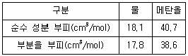
- 1.22
- 2.40
- 3.76
- 5.83
(정답률: 알수없음)
10. 주울-톰슨(Joule-Thomson)계수 μT에 대한 표현으로 옳은 것은?
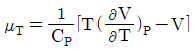
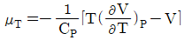
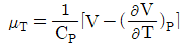
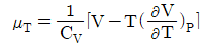
(정답률: 알수없음)
11. 어떤 기체의 제2비리얼 계수 B가 -400cm3/mol이다. 300K, 1기압에서 비리얼 식으로 계산한 이 기체의 압축인자(compressibility factor)는 약 얼마인가?
- 0.984
- 0.923
- 1.016
- 0.016
(정답률: 알수없음)
12. 2성분계 용액(binary solution)이 그 증기와 평형상태하에 놓여있을 경우 그 계 안에서 반응이 없다면 평형상태를 결정하는데 필요한 독립변수의 수는?
- 1
- 2
- 3
- 4
(정답률: 알수없음)
13. 다음과 같은 반응이 평형상태에 도달하였다. 500℃에서 평형상수가 e28이라면 25℃에서의 평형상수는 약 얼마인가? (단, 이 온도범위에서 반응열 △H 는 -68000cal/mol로 일정하다.)
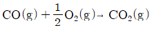
- e28
- e70.6
- e98.6
- e120
(정답률: 알수없음)
14. 비리얼 계수에 대한 다음 설명 중 옳은 것을 모두 나열한 것은?
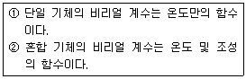
- ①
- ②
- ①, ②
- 모두 틀림
(정답률: 알수없음)
15. 기체가 단열 비가역 팽창을 한다면 기체의 엔트로피(Entropy)는 어떻게 되는가?
- 감소한다.
- 증가한다.
- 불변이다.
- 엔트로피 변화와는 무관하다.
(정답률: 알수없음)
16. 500K 의 열저장고로부터 열을 받아서 일을 하고 300K의 외계에 열을 방출하는 카르노(Carnot)기관의 효율은?
- 0.4
- 0.5
- 0.88
- 1
(정답률: 알수없음)
17. 압력과 온도변화에 따른 엔탈피 변화가 다음과 같은 식으로 표시될 때 □에 해당하는 것으로 옳은 것은?
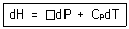
- V
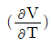
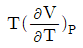
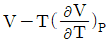
(정답률: 알수없음)
18. A기체 3.0몰과 B기체 1.0몰의 혼합기체가 1.0bar, 0℃에 있다. 혼합기체 내에서 a의 퓨개시티는 10.0bar이고, 순수한 A의 퓨개시티는 20.0bar 이다. 이 때 혼합기체 내의 A의 활동도계수(activity coefficient)를 구하면?
- 0.33
- 0.50
- 0.67
- 2.67
(정답률: 알수없음)
19. 열역학적 성질을 정희한 것 중 옳은 것은/
- H ≡ U - PV
- H ≡ G - TS
- G ≡ H - TS
- G ≡ A - PV
(정답률: 알수없음)
20. 공기표준 디젤 사이클의 구성요소로서 그 과정이 옳은 것은?
- 단열압축 → 정압가열 → 단열팽창 → 정적방열
- 단열압축 → 정적가열 → 단열팽창 → 정적방열
- 단열압축 → 정적가열 → 단열팽창 → 정압방열
- 단열압축 → 정압가열 → 단열팽창 → 정압방열
(정답률: 알수없음)
2과목: 화학공업양론
21. 2kmol의 탄소를 모두 연소시켜 CO2를 생성하였으나 일부는 불완전 연소를 하여 CO가 되었다. 생성가스의 분석결과 CO2가 1.5kmol이 되었을 때 CO의 양은 몇 kg인가?
- 14
- 24
- 42
- 66
(정답률: 알수없음)
22. 25℃에서 정용 반응열 △Hv 가 -326.1kcal일 때 같은 온도에서 정압반응열 △H0는 약 얼마인가?
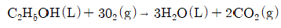
- -325.5kcal
- +325.5kcal
- -326.7kcal
- +326.7kcal
(정답률: 알수없음)
23. 2wt% NaOH 수용액을 10wt% NaOH 수용액으로 농축하기 위해 농축 증발관으로 2wt% NaOH 수용액을 1000kg/h 공급하면 시간당 증발되는 수분의 양은 몇 kg 인가?
- 200kg
- 400kg
- 600kg
- 800kg
(정답률: 알수없음)
24. 어느 날 기압이 720.2mmHg인 공기의 상대습도가 60%였을 때 공기 중의 수분 함량은 몇 kgH2O/kg건조공기인가? (단, 같은 날의 기온에서 물의 포화증기압은 25mmHg이다.)
- 0.019
- 0.13
- 1.9
- 1.3
(정답률: 10%)
25. 질량분율 XF의 유입량 F가 계로 유입되어 질량분율 XL의 배출량 L과 질량분율 XV의 배출량 V가 계를 떠날 때 직각 삼각형에서 표시될 수 있는 지렛대의 원리에 적합지 않은 것은/
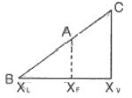
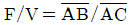
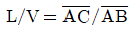
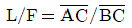
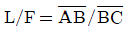
(정답률: 알수없음)
26. 비중 0.8인 액체가 뚜껑이 없는 통에 담겨져 있다. 통밑바닥의 압력이 1.23kgf/cm2일 떄 통에 담겨져 있는 액체 기둥의 높이는 몇 m 인가?
- 2.5
- 25
- 1.54
- 15.4
(정답률: 알수없음)
27. 내부에너지에 대한 설명으로 가장 거리가 먼 것은?
- 분자들의 운동에 기인한 에너지이다.
- 분자들의 전자기적 상호작용에 기인한 에너지이다.
- 분자들의 변진, 회전 및 진동운동에 기인한 에너지이다.
- 내부에너지는 압력에 의해서만 결정된다.
(정답률: 알수없음)
28. 82℃에서 벤젠의 증기압은 811mmHg, 톨루엔의 증기압은 314mmHg이다. 벤젠 25몰%와 톨루엔 75몰%를 82℃에서 증발시키면 평형상태의 증기 중에서 톨루엔의 몰분율은 약 얼마인가? (단, 라울의 법칙이 성립한다고 본다.)
- 0.39
- 0.49
- 0.54
- 0.65
(정답률: 알수없음)
29. 공기가 질소 79Vol%, 산소 21Vol%로 이루어져 있다고 가정할 때 70°F, 750mmHg에서 공기의 밀도는 약 얼마인가?
- 1.10g/L
- 1.14g/L
- 1.18g/L
- 1.22g/L
(정답률: 알수없음)
30. Na2SO4 30wt%를 포함하는 수용액의 조성을 mol 백분율로 표시하면 약 몇 mol%인가?
- 5.2
- 21.8
- 26.4
- 30.0
(정답률: 10%)
31. 물질의 상을 변화시키지 않고 물질의 온도를 변화시키기 위해 가해지는 에너지는?
- 혼합열
- 회석열
- 현열
- 잠열
(정답률: 알수없음)
32. 압력 2atm, 부피 1000L의 기체가 정압하에서 부피가 반으로 줄었다. 이 때 작용한 일의 크기는 몇 kcal 인가?
- 12.1
- 24.2
- 48.4
- 96.8
(정답률: 알수없음)
33. 20℃에서 용액 1L당 NaCI 230g을 함유하고 있는 NaCI 용액이 있다. 이 온도에서 수용액의 밀도가 1.148g/mL라면 NaCI의 중량 %는 약 얼마인가?
- 10
- 20
- 30
- 40
(정답률: 알수없음)
34. 다음 그림과 같은 습윤공기의 흐름이 있다. A공기 100kg당 B공기 몇 kg을 섞어야겠는가?
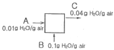
- 200
- 100
- 60
- 50
(정답률: 알수없음)
35. 증발 잠열 △ v 는 Clausius-Clapeyron 식에서 추정할 수도 있다. 어떤 증기압이 453K에서 2atm, 490K에서 5atm 일 때 이 범위에서 △
v 는 Clausius-Clapeyron 식에서 추정할 수도 있다. 어떤 증기압이 453K에서 2atm, 490K에서 5atm 일 때 이 범위에서 △
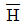
v가 일정하다고 가정하면 다음 중 옳게 나타낸 식은?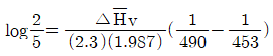
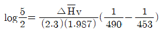
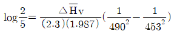
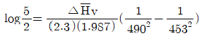
(정답률: 알수없음)
36. 다음 중 가장 낮은 압력을 나타내는 것은?
- 760mmHg
- 101.3kPa
- 14.2psi
- 1bar
(정답률: 알수없음)
37. CO2는 고온에서 다음과 같이 분해된다. 0℃, 1atm에서 11.2L 인 CO2를 일정압력으로 3000K 까지 가열했다면 기체의 부피는 약 몇 L 가 되는가? (단, 3000K, 1atm에서 CO2가 분해된다고 가정한다.)
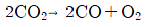
- 160
- 150
- 140
- 130
(정답률: 알수없음)
38. 섭씨온도 눈금과 화씨온도 눈금의 수치가 일치되는 온도는/
- 40°F
- 25°F
- -25°F
- 130
(정답률: 알수없음)
39. 이상기체를 T1에서 T2까지 일정압력과 일정용적에서 가열할 때 열용량에 관한 식 중 옳은 것은? (단, CP는 정압열용량이고, CV는 정적열용량이다.)
- CV+CP=R
- CVㆍ△T=(CP-R)ㆍ△T
- △U=CVㆍ△T-W
- △U=Rㆍ△TㆍCP
(정답률: 알수없음)
40. 열에 관한 용어의 설명 중 틀린 것은/
- 표준생성열은 표준조건에 있는 원소로부터 표준조건의 혼합물로 생성될 때의 반응열이다.
- 표준연소열은 25℃, 1atm에 있는 어떤 물질과 산소분자와의 산화반응에서 생기는 반응열이다.
- 표준반응열이란 25℃, 1atm의 상태에서의 반응열을 말한다.
- 진발열량이란 연소해서 생성된 물이 액체상태일 때의 발열량이다.
(정답률: 알수없음)
3과목: 단위조작
41. 직경 5cm인 스테인리스관을 비중이 0.9인 액체가 36m3/h로 흐를 때 평균 속도는 약 몇 m/s인가?
- 0.25
- 0.51
- 2.5
- 5.1
(정답률: 알수없음)
42. 다음 중 유체의 유속(유량)을 측정하는 장치가 아닌 것은?
- 피토관(pitot tube)
- 벤츄리 메타
- 오리피스 메타
- 멀티 메타
(정답률: 알수없음)
43. 다음 중 무차원이 아닌 것은? (단, D는 직경, G는 단위면적당 질량속도, μ는 점도, CP는 비열, L 은 두께, h는 열전달계수, A는 전열면적, k는 열전도도 이다.)
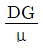
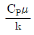
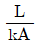
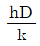
(정답률: 알수없음)
44. 절대점도가 2cP이고 비중이 0.5인 유체의 동점도(kinematic viscosity)는 몇 cSt인가?
- 0.02
- 0.04
- 2
- 4
(정답률: 알수없음)
45. 흡수용액으로부터 기체를 탈거(desorption)하는 일반적인 방법에 대한 설명으로 틀린 것은?
- 좋은 조건을 위해 온도와 압력을 높여야 한다.
- 액체와 기체가 맞흐름을 갖는 탑에서 이루어진다.
- 탈거매체로는 수증기나 불활성기체를 이용할 수 있다.
- 용질의 제거율을 높이기 위해서는 여러 단을 사용한다.
(정답률: 알수없음)
46. 흡수탑에서 전달단위수(NTU)는 10 이고 전달단위높이(HTU)가 0.5m 일 경우, 필요한 충전물의 높이는 몇 m 인가?
- 0.5
- 5
- 10
- 20
(정답률: 알수없음)
47. 흑체의 전체 복사능은 절대온도의 4승에 비례한다는 법칙은?
- Stefan-Boltzmann 법칙
- McAdams 법칙
- Planck 법칙
- Wlen 법칙
(정답률: 30%)
48. 2중 열교환기의 열전달계수가 50kcal/m2hㆍ℃이고 향류(Counter current)로 흐를 때 더운 액체의 온도가 65℃에서 22℃로 내려가고 찬 액체의 온도가 20℃에서 45℃로 올라갔다. 단위면적당 열교환율은 몇 kcal/m2ㆍh인가?
- 48
- 75
- 311
- 391
(정답률: 알수없음)
49. 다음 중 다단 증류 조작에서 각 단의 효율을 높이기 위한 방법으로 가장 타당한 것은?
- 단수를 증가 시켜야 한다.
- 액상과 기상의 접촉이 잘 되도록 해야 된다.
- 환류비를 크게 해야 한다.
- 단축순화를 시켜야 한다.
(정답률: 알수없음)
50. 증류조작에서 전환류(total reflux)로 조작할 때에 대한 설명으로 틀린 것은?
- 탑정제품의 유출이 없다.
- 탑의 지름이 최소가 된다.
- 최소의 이상단을 갖는다.
- 가열 증기량이 커진다.
(정답률: 알수없음)
51. 향류다단 추출에서 추제비 4, 단수 3으로 조작할 때 추출율은?
- 0.21
- 0.431
- 0.572
- 0.988
(정답률: 알수없음)
52. 석회석을 분쇄하여 시멘트를 만들고자 할 때 지름이 1m인 볼밀(ball mill)의 능률이 가장 좋은 최적 회전속도는 약 몇 rpm 정도 인가?
- 5
- 20
- 32
- 54
(정답률: 알수없음)
53. 벤젠, 톨루엔의 혼합물을 그 비점에서 정류탑에 공급한다. 원액 중 벤젠의 몰 분율은 0.2 유출액은 0.96, 관출액은 0.04의 조건에서 매시 90kmol을 처리한다. 환류비는 최소환류비의 1.5배 이다. 상부 조작선의 방정식을 옳게 나타낸 것은? (다, 벤젠의 액조성이 0.2일 때 평형증기의 조성은 0.375이다.)
- yn+1=3.34Xn+0.834
- yn+1=0.833Xn+0.834
- yn+1=3.34Xn+0.16
- yn+1=0.833Xn+0.16
(정답률: 알수없음)
54. 3중 효율증발기에서 순류공급(forward feed)과 역류공급(backward feed)에 대한 설명으로 옳은 것은?
- 순류공급과 역류공급은 모두 효용관간의 승액용 펌프가 필요하다.
- 순류공급은 효용관간의 승액용 펌프가 필요 없다.
- 순류공급과 역류공급은 모두 효용관간의 송액용 펌프가 필요 없다.
- 역류공급은 효용관간의 송액용 펌프가 필요 없다.
(정답률: 알수없음)
55. 건조조족에서 임계함수율(critical mosture content)이란 무엇인가?
- 건조 속도가 0일 때의 함수율이다.
- 감율건조 기간이 끝날 때의 함수율이다.
- 항율건조 기간에서 감율건조 기간으로 바뀔 때의 항수율이다.
- 건조조작이 끝날 때의 함수율이다.
(정답률: 알수없음)
56. 다음 중 증발, 건조, 결정화, 분쇄, 분급의 기능을 모두 가지고 있는 건조 장치는?
- 적외선 복사 건조기
- 원통 건조기
- 회전 건조기
- 분무 건조기
(정답률: 알수없음)
57. McCabe-Thiele의 최소이론 단수를 구한다면, 정류부 조작선의 기울기는?
- 1.0
- 0.5
- 2.0
- 0
(정답률: 알수없음)
58. 증류의 이론단수 결정에서 McCabe-Thiele의 방법을 사용할 경우 필요한 가정에 해당하는 것이 아닌 것은?
- 각 단에서 증기와 액의 현열 변화는 무시한다.
- 혼합열과 탑 주위로의 복사열은 무시한다.
- 각 단에서 증발잠열은 같다.
- 모든 단에서 증기의 조성은 같다.
(정답률: 알수없음)
59. U자관 마노미터를 벤튜리 유량계 양단에 설치했다. 마노미터에는 비중 13.6인 수은이 들어 있고 수온상부에는 비중 1.3인 식염수가 들어 있다. 마노미터 읽음이 20cm일 때 압력차는 약 몇 mH2O인가?
- 0.81
- 1.25
- 1.89
- 2.46
(정답률: 알수없음)
60. 비중이 0.945, 점도가 0.9cP 인 액체가 안지름이 5cm, 길이가 1km 인 파이프 속으로 3cm/s의 속도로 흐를 때 Fanning 마찰계수의 값은 약 얼마인가?
- 0.0001
- 0.001
- 0.01
- 0.1
(정답률: 알수없음)
4과목: 반응공학
61. 강연회 같은 데서 간혹 일어나는 일로 마이크와 스피커가 방향이 맞으면 ‘삐~’하는 소리가 나게 된다. 마이크의 작은 신호가 스피거로 증폭되어 나오고, 다시 이것이 마이크로 들어가 증폭되는 동작이 반복되어 매우 큰 소리로 되는 것이다. 앞의 현상을 설명하는 이 폐루프의 안정성 이론은?
- Routh Stability
- Unstablen Pole
- Lyapunov Stability
- Bode Stability
(정답률: 알수없음)
62. y=3k<sup>3</sup>일 경우 k=10부근에서 y를 선형화하면 다음 중 어느 것인가?
- y=3×103+9×102(k-10)
- y=3×103-9×102(k-10)
- y=3×102+9×102(k-10)
- y=3×102-9×102(k-10)
(정답률: 알수없음)
63. PID제어기에서 Derivative Kick을 방지하는 방법은?
- Bumpless transfer 동작을 첨가한다.
- 미분상수를 음수로 한다.
- Anti-reset windup 동작을 첨가한다.
- 미분동작을 공정변수에만 적용한다.
(정답률: 알수없음)
64. 주파수 응답의 위상각이 0°와 90° 사이인 제어기는?
- 비께 제어기
- 비례-미분 제어기
- 비례-적분 제어기
- 비례-미분-적분 제어기
(정답률: 알수없음)
65. 다음 [그림]과 같은 Bode 선도로 표시되는 제어기는?
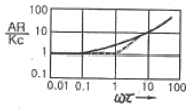
- 비례 제어기
- 비례 - 적분 제어기
- 비레 - 미분 제어기
- 적분 - 미분 제어기
(정답률: 알수없음)
66. 다음 중에서 사인응답(Sinusidal Response)이 위상앞섬(Phase lead)을 나타내는 것은?
- P 제어기
- PI 제어기
- PD 제어기
- 수송 래그(Transportation lag)
(정답률: 알수없음)
67. 잔류편차를 제거하기 위해 도입되는 제어기의 동작은?
- 비례동작
- 미분동작
- 적분동작
- on-off 동작
(정답률: 알수없음)
68. 다음 공정의 임계주파수(ultimate frequence)는?
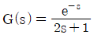
- 0.027
- 0.081
- 1.54
- 1.84
(정답률: 알수없음)
69. 주파수 3에서 amplitude ratio가 1/2이고 phase angle이 -π/3인 공정에서 공정 입력 u(t)=2sin(3t)를 적용할 때 시간이 많이 지난 후의 공정 출력 y(t)는?
- y(t)=sin(t)
- y(t)=2sin(tπ/3)
- y(t)=4sin(3t)
- y(t)=sin(3t-π/3)
(정답률: 알수없음)
70. 되먹임제어에 관한 설명 중 맞는 것은?
- 외란 정보를 이용하여 제어기 출력을 결정한다.
- 제어변수를 측정하여 조작변수 값을 결정한다.
- 외란이 미치는 영향을 선 보상해주는 원리이다.
- 제어변수를 측정하여 외란을 조절한다.
(정답률: 알수없음)
71. 다음 블록선도의 총괄전달함수 C/R을 구한 것 중 옳은 것은?
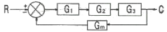
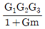
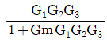
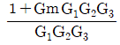
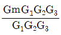
(정답률: 알수없음)
72. 단면적이 A인 어떤 탱크가 있다. 수면으로부터 h만큼 깊이의 탱크 벽에 오리피스 구멍을 만들었다. 이 오리피스를 통해 나오는 유체의 유량은?
- h에 비례한다.
- h1/2에 비례한다.
- h2에 비례한다.
- 3/2에 비례한다.
(정답률: 알수없음)
73.
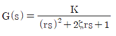
2차계의 주파수 응답에서 감쇄계수 값에 관계없이 위상의 지연이 90°가 되는 경우는? (단, τ시정수 이고, ω는 주파수이다.)- ωτ=1 일 때
- ω=τ 일 때
- ωτ=√2 일 때
- ω=τ2 일 때
(정답률: 알수없음)
74. 비례대가 거의 영에 가까운 제어동작은?
- PD 제어동작
- PI 제어동작
- PID 제어동작
- on-off 제어동작
(정답률: 알수없음)
75. y(t)의 Laplace 변환이 Y(s)일 때, 다음 중 틀린 것은?
- d2y(t)/dt2의 Laplace 변환은 s2Y(s)-sy(0)-y'(0)이다.
- y(t)dml 0에서 t까지의 적분에 대한 Laplace 변환은 Y(s)/s 이다.
- y(t)에 θ만큼의 시간지연이 가해진 항수의 Laplace변환은 y(s-θ)이다.
- 최종값 정리가 모든 함수에 적용되는 것은 아니다.
(정답률: 알수없음)
76. x1과 x2는 다음의 미분방정식을 만족할 때 x1과 x2에 대하여
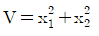
는 시간에 따라 어떻게 되는가?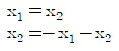
- 감소한다.
- 증가한다.
- 진동한다.
- 초기값에 따라 달라진다.
(정답률: 알수없음)
77. 다음의 미분 방정식을 푼 결과로 옳은 것은?
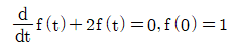
- f(t)=e-2t
- f(t)=e2
- f(t)=2et
- f(t)=2e-t
(정답률: 알수없음)
78. 공정제어의 일반적인 기능에 관한 설명 중 잘못된 것은?
- 외란의 영향을 극복하며 공정을 원하는 상태에 유지시킨다.
- 불안정한 공정을 안정화 시킨다.
- 공정의 최적 운전조건을 스스로 찾아 준다.
- 공정의 시운전시 짧은 시간 안에 원하는 운전상태에 도달할 수 있도록 한다.
(정답률: 알수없음)
79. 비례-적분 제어기의 주파수 응답에서 위상각ø은?
- -90°＜ø＜0°
- 0°＜ø＜90°
- -180°＜ø＜0°
- 0°＜ø＜180°
(정답률: 알수없음)
80. 전달함수
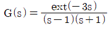
의 계단응답(Step Response)에 대해 옳게 설명한 것은?- 계단입력을 적용하자 곧바로 출력이 초기치에서 움직기 시작하여 1로 진동하면서 수렴한다.
- 계단입력을 적용하자 곧바로 출력이 초기치에서 움직이기 시작하여 진동하지 않으면서 발산한다.
- 계단입력에 대해 시간이 3만큼 지난 후 진동하지 않고 발산한다.
- 계단입력에 대해 진동하면서 발산한다.
(정답률: 알수없음)
5과목: 공정제어
81. 자동차용 가솔린에 요구되는 성질이 아닌 것은?
- 연소열이 나쁜 유분을 포함하지 않을 것
- 고무질이 적을 것
- 반응성이 중성일 것
- 옥탄가가 낮을 것
(정답률: 알수없음)
82. 다음은 각 환원반응과 표준환원전위이다. 이들로부터 예측한 다음의 현상 중 옳은 것은?
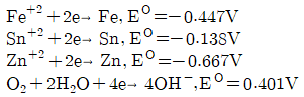
- 철은 공기 중에 노출 시 부식되지만 아연은 공기 중에서 부식되지 않는다.
- 철은 공기 중에 노출 시 부식되지만 주석은 공기 중에서 부식되지 않는다.
- 주석과 아연이 접촉 시에 주석이 우선적으로 부식된다.
- 철과 아연이 접촉 시에 아연이 우선적으로 부식된다.
(정답률: 알수없음)
83. 순도가 90%인 황산암모늄이 100kg이 있다. 이 중 질소의 함량은 몇 kg이 되는가?
- 9.1
- 10.2
- 19.1
- 26.4
(정답률: 알수없음)
84. 수(水)처리와 관련된 보기의 설명중 옳은 것으로만 짝지어 진 것은?
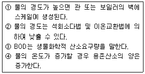
- ①, ②, ③
- ②, ③, ④
- ①, ③, ④
- ①, ②, ④
(정답률: 알수없음)
85. Solvay법(암모니아 소다법)에서 암모니아를 회수하기 위해서 사용되는 것은?
- Ca(OH)2
- Ca(NO3)2
- NaHSO4
- NaHCO3
(정답률: 알수없음)
86. 다음 중 석유의 전화법이 아닌 것은?
- 개질법
- 이성화법
- 원심분리법
- 수소화법
(정답률: 알수없음)
87. 가성소다(NaOH)를 만드는 방법 중 격막법과 수은법을 비교한 것으로 옳은 것은?
- 전류 밀도에 잇어서 격막법은 수은법의 5~6배가 된다.
- 제품의 가성소다 품질은 수은법보다 격막법이 좋다.
- 수은법에서는 고농도를 만들기 위해서 많은 증기가 필요하기 때문에 보일러용 연료가 많이 필요하다.
- 격막법에서는 막이 파손될 때에 폭발이 일어날 위험이 있다.
(정답률: 알수없음)
88. 부식 반응에 대한 구동력(electromotive force)E 는? (단, △G는 깁스자유에너지, n금속 1몰당 전자의 몰수, F는 패러데이 상수이다.)
- E=-nF/△G
- E=-△G/nF
- E=-nF△G
- E=-nF
(정답률: 알수없음)
89. 플라스틱 분류에 있어서 열경화성 수지로 분류되는 것은?
- 플리아미드 수지
- 폴리우레탄 수지
- 폴리아세탈 수지
- 폴리에틸렌 수지
(정답률: 알수없음)
90. 산화에틸렌의 수화반응으로 만들어지는 것은?
- 아세트알데히드
- 에틸렌글리콜
- 에틸알코올
- 글리세린
(정답률: 알수없음)
91. 순수 염화수소(HCI)가스의 제법 중 흡착법에서 흡착제로 이용되지 않는 것은?
- MgCI2
- CuSO4
- PbSO4
- Fe3(P04)2
(정답률: 알수없음)
92. 카바이드는 석회질소비료의 제조원료로서 그 함량은 아세틸렌 가스의 발생량으로 결정한다. 1kg의 제조원료에서 250L(10℃, 760mmHg)의 아세틸렌 가스가 발생하였다면 제조원료 1kg 중 카바이드의 함량은? (단, 원자량은 Ca 40, C 12이다.)
- 68.9%
- 75.3%
- 78.8%
- 83.9%
(정답률: 알수없음)
93. 알레산 무수물을 벤젠의 공기산화법으로 제조하고자 한다. 이 때 사용되는 촉매는 무엇인가?
- 산화바나듐
- Si-Al2O3
- PdCI2
- LiH2PO4
(정답률: 알수없음)
94. 다음 중 옥탄가가 가장 높은 것은?
- 2-Methyl heptane
- n-Hexane
- Toluene
- 2-Methyl hexane
(정답률: 알수없음)
95. [보기]의 설명에 가장 잘 부합되는 연료전지는?
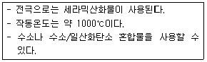
- 인산형 연료전지(PAFC)
- 용융탄산염 연료전지(MCFC)
- 고체산화물혐 연료전지(SOFC)
- 알칼리연료전지(AFC)
(정답률: 알수없음)
96. 폐수 내에 포함된 고농도의 Cu+2를 pH를 조절하여 Cu(OH)2 형태로 일부 제거함으로서 Cu+2의 농도를 63.55mg/L 까지 감소시키고자 할 때, 폐수의 적절한 pH는? (단, Cu의 원자량은 63.55이다.)
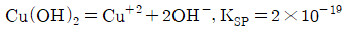
- 4.4
- 6.2
- 8.1
- 9.4
(정답률: 알수없음)
97. 다음 중 천연 고무와 가장 관계가 깊은 것은?
- Propane
- Ethylene
- Isoprene
- Isobutene
(정답률: 40%)
98. 올레핀을 코발트 촉매 존재하에서 고압반응시켜 알데히드를 합성하는 반응은?
- 쿠멘(Cumene)반응
- 옥소(Oxo)반응
- 디아조(Diazo)반응
- Wolff-kisher 반응
(정답률: 알수없음)
99. 페놀수지에 대한 설명 중 틀린 것은/
- 열경화성 수지이다.
- 우수반 기계적 성질을 갖는다.
- 전기적 절연성, 내약품성이 강하다.
- 알칼리에 강한 장점이 있다.
(정답률: 알수없음)
100. 디젤연료의 성능을 표시하는 하나의 척도는?
- 옥탄가
- 유동점
- 세탄가
- 아닐린점
(정답률: 30%)
6과목: 화학공업개론
101. 비가역 액상반응에서 공간시간 τ가 일정할 때 전환율이 초기 농도에 무관한 반응차수는?
- 0차
- 1차
- 2차
- 0차, 1차, 2차
(정답률: 알수없음)
102. 액상 반응에서 공간시간(space time) τ와 평균체재시간(holding time)
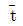
의 관계를 옳게 나타낸 것은? (단, m은 이상혼합흐름반응기를 나타내고 p는 이상관형 반응기를 나타낸다.)(정답률: 알수없음)
103. 어떤 액상 반응의 반응 속도식이 r=0.253CAmol/cm3ㆍmin이다. 2개의 2.5L mixed flow reactor를 직렬로 연결해서 사용할 경우 전환율을 구하면? (단, CA는 반응물의 농도를 나타내며, 공급속도는 400cm3/min 이다.)
- 73%
- 78%
- 80%
- 85%
(정답률: 알수없음)
104. 회분식 반응기에서 반응시간이 tF일 때 CA/CA0의 값을 F라 하면 반응차수 n과 tF의 관계를 옳게 표현한 식은? (단, k는 반응속도상수 이고, n≠1 이다.)
(정답률: 알수없음)
1⑤. CSTR에서 80%의 전화율을 얻는데 필요한 공간시간이 5h이다. 공급물 2m3/min을 80%의 전화율로 처리하는데 필요한 반응기의 부피는?
- 300m3
- 400m3
- 600m3
- 800m3
(정답률: 알수없음)
106. 어떤 액상반응 A→R이 1차 비가역으로 batch reactor에서 일어나 A의 50%가 전환되는데 5분이 걸린다. 75%가 전환되는 데에는 약 몇 분이 걸리겠는가/
- 7.5분
- 10분
- 12.5분
- 15분
(정답률: 알수없음)
107. 다음의 반응에서 반응속도 상수 간의 관계는 k1 = k-1 = k2 = k-2이며 초기 농도는 CAO=1, CRO = CSO = 0일 때 시간이 충분히 지난 뒤 농도 사이의 관계를 옳게 나타낸 것은?
- CA ≠ CR = CS
- CA = CR ≠ CS
- CA = CR = CS
- CA ≠ CR ≠ CS
(정답률: 알수없음)
108. N2 20%, H2 80%로 구성된 혼합 가스가 암모니아 합성 반응기에 들어갈 떄 체적 변화율 εN2는?
- -0.4
- -0.5
- 0.4
- 0.5
(정답률: 알수없음)
109. 비가역 0차 반응에서 반응이 완결되는데 필요한 반응 시간은?
- 초기 농도의 역수와 같다.
- 속도 전수의 역수와 같다.
- 초기 농도를 속도 정수로 나눈 값과 같다.
- 초기 농도에 속도 정수를 곱한 값과 같다.
(정답률: 알수없음)
110. A분해반응의 1차 반응속도 상수는 0.345/min 이고 반응초기의 농도 CAO가 2.4mol/L이다. 정용 회분식 반응기에서 A의 농도가 0.9mol/L 될 때까지의 시간은?
- 1.84min
- 2.84min
- 3.84min
- 4.84min
(정답률: 알수없음)
111. 액상 반응을 위해 다음과 같이 CSTR 반응기를 연결하였다. 이 반응의 반응 차수는?
- 1
- 1.5
- 2
- 2.5
(정답률: 알수없음)
112. 아세트산에틸의 가수분해는 1차 반응속도식에 따른다고 한다. 만일 어떤 실험조건하에서 정확히 20%를 분해 시키는데 50분이 소요되었다면 반감기는 약 얼마인가?
- 106.1분
- 121.3분
- 139.2분
- 155.3분
(정답률: 알수없음)
113. 다음의 균일계 액상 평행 반응에서 S의 순간 수율을 최대로 하는 CA의 농도는? (단, rR=CA, rs = 2C2A,rT=C3A이다.)
- 0.25
- 0.5
- 0.75
- 1
(정답률: 알수없음)
114. A→C의 촉매반응이 다음과 같은 단계로 이루어진다. 탈착반응이 율속단계일 때 Langmuir Hinshelwood모델의 반응속도식으로 옳은 것은? (단, A는 반응물, S는 활성점, AS와 CS는 흡착 중간체이며, k는 속도상수, K는 평형상수, SO는 초기 활성점, [ ]는 농도를 나타낸다.)
(정답률: 10%)
115. PSSH(Pseudo Steady State Hypothesis)에 대한 설명으로 옳은 것은?
- 반응기 입구와 출구의 몰 속도가 같다.
- 반응중간체의 순 생성속도가 0 이다.
- 축방향의 농도구배가 없다.
- 반응기내의 온도 구배가 없다.
(정답률: 알수없음)
116. 2A→R, -rA=kC2A인 2차반응의 반응속도상수 k를 결정하는 방법은?
- XA/(1-XA)를 t의 함수로 도시(plot)하면 기울기가 k 이다.
- XA/(1-XA)를 t의 함수로 도시하면 절편이 k 이다.
- 1/CA를 t의 함수로 도시하면 절편이 k 이다.
- 1/CA를 t의 함수로 도시하면 기울기가 k 이다.
(정답률: 알수없음)
117. 그림은 단열 조작에서 에너지수지식의 도시적 표현이다. 발열반응의 경우 불활성 물질을 증가시켰을 때 단열 조작선은 어느 방향으로 이동하겠는가? (단, 실선은 불활성 물질이 없는 경우를 나타낸다.)
- ①
- ②
- ③
- ③
(정답률: 알수없음)
118. 다음과 같은 평행반응이 진행되고 있을 때 원하는 생성물이 S라면 반응물의 농도는 어떻게 조절해 주어야 하는가?
- CA를 높게, CB를 낮게
- CA를 낮게, CB를 높게
- CA 와 CB를 높게
- CA 와 CB를 낮게
(정답률: 알수없음)
119. 다음 그림의 사선 부분은 생성물을 최대로 하였을 때의 반응 형태이다. 이 반응에 가장 적합한 반응기의 종류는? (단, CAO는 초기(또는 공급물) 농도이고, CAf는 최종(또는 출구) 농도이다.)
- 플러그 흐름 반응기
- 혼합 흐름 반응기
- 다단식 반응기
- 조형 반응기
(정답률: 알수없음)
120. 어떤 성분 A가 분해되는 단일성분의 비가역 반응에서 A의 초기농도가 340mol/L 인 경우 반감기가 100s 이었다. A기체의 초기농도를 288mol/L로 할 경우는 140s 가 되었다면 이 반응의 반응차수는 얼마인가?
- 0차
- 1차
- 2차
- 3차
(정답률: 알수없음)